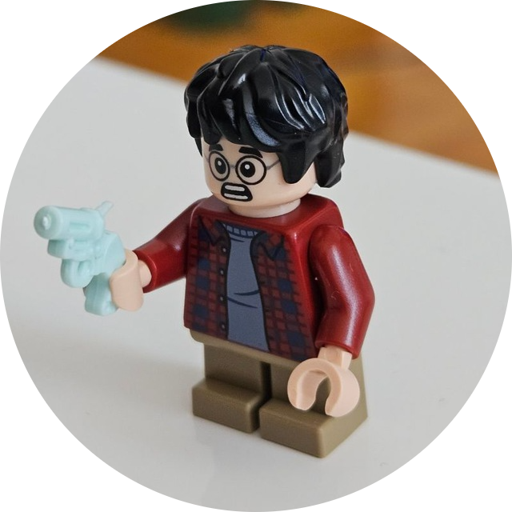

Hello, I'm
Mladen Dinčić
3D & OFML Data Engineer


Hello, I'm
3D & OFML Data Engineer
Get To Know More

Junior 3D & OFML Data Engineer
Junior Frontend Developer

MEng. Master of Engineering
BEng. Bachelor of Engineering
As a mechanical engineering student poised to become a master engineer, I bring a unique blend of technical prowess and artistic flair to the table. Beyond my passion for engineering, I find immense joy in expressing myself through art and design. Drawing has always been a form of creative expression for me, and I dedicate much of my free time to sharpen my skills in product design sketches. Whether it’s conceptualizing innovative mechanical systems or crafting sleek product prototypes, I thrive on the intersection of creativity and engineering precision. In my quest for knowledge, I eagerly immerse myself in learning new software tools that complement my engineering expertise. From CAD software for 3D modeling to graphic design tools for rendering realistic prototypes, I embrace each opportunity to expand my skill set and stay abreast of industry trends. Outside the realm of engineering, I draw inspiration from renowned furniture designers like Foureyes Furniture and Frank Howarth. Their ability to blend form and function, craftsmanship and innovation, resonates deeply with me, fueling my own creative aspirations. In essence, I am a mechanical engineer with a passion for art, design, and innovation. Whether I’m sketching out my latest product idea or delving into the intricacies of CAD software, I am driven by a desire to push the boundaries of what’s possible and leave a lasting impact on the world through my work.